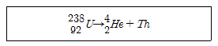
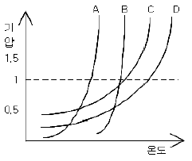

위험물산업기사 (2006-05-14 기출문제)
1과목: 일반화학
1. 페놀에 대한 설명 중 가장 거리가 먼 내용은?
- 산성을 띤다
- FeCl3 용액을 가하면 정색반응을 한다.
- 벤젠과 아세톤을 산촉매에서 반응시키면 큐멘(이소프로필벤젠)이 생성된다.
- 벤젠보다 끓는점이 높다.
(정답률: 34%)

2. Na2O, BaO2, R-O-O-R 물질의 공통적인 성질은? (문제 오류로 실제 시험에서는 모두 정답처리 되었습니다. 여기서는 가번을 누르면 정답 처리 됩니다.)
- 단체이다.
- 과산화물이다.
- 산성산화물이다.
- 염기성 산화물이다.
(정답률: 64%)
3. 분자식 HClO2 의 이름은?
- 염소산
- 아염소산
- 차아염소산
- 과염소산
(정답률: 76%)
4. 방사성 원소인 U(우라늄)이 다음과 같이 변화되었을 때의 붕괴 유형은?

- α 붕괴
- β 붕괴
- r 붕괴
- R 붕괴
(정답률: 66%)
5. 다음 중 산화제가 될 수 없는 물질은?
- 산소를 잃기 쉬운 물질
- 전자를 잃기 쉬운 물질
- 수소와 결합하기 쉬운 물질
- 발생기 산소를 내기 쉬운 물질
(정답률: 34%)
6. 주기율표에서 같은 족에 속하는 원소의 관계를 가장 올바르게 설명한 것은?
- 서로 비슷한 화학적 성질을 갖는다.
- 0족 기체는 이온화 에너지가 작다.
- 원자 번호가 클수록 비금속성이 강해진다.
- 원자번호가 클수록 원자반지름이 짧아진다.
(정답률: 68%)
7. 중화적정 실험 중 미지농도 황산 20mL에 실험자의 실수로 1N-HCl 25mL을 넣었다. 이때 두 혼합산을 중화하는데 3N-NaOH 용액 40mL가 소비되었다면 황산의 농도는 몇 N인가?
- 3
- 3.75
- 4
- 4.75
(정답률: 35%)
8. 콜로이드 입자에 대한 Tyndall 현상에 대한 옳은 설명은?
- 콜로이드용액에 광선을 비추게 되면 입자들이 빛을 산란시켜서 광선의 진로를 알 수 있는 현상
- 콜로이드 입자는 표면적이 질량에 비해 매우 크기 때문에 흡착되는 현상
- 콜로이드 입자가 전극에 끌려오는 현상
- 콜로이드 입자가 끊임없이 불규칙적 직선운동을 하 는 현상
(정답률: 53%)
9. 어떤 원자핵에서 양성자의 수가 3이고, 중성자의 수가 2 일 때 질량수는 얼마인가?
- 1
- 3
- 5
- 7
(정답률: 86%)
10. 헨리(Henry)의 법칙이 가장 잘 적용되는 기체는?
- NH3
- SO2
- CO2
- HCl
(정답률: 81%)
11. 오존 분자 (O3) 2개의 분해 되면 산소 분자 3개가 생긴다. 오존 분자 3.01*1023개가 분해되었을 때 생성되는 산소 기체의 부피는 표준상태에서 몇 L인가?
- 11.2
- 16.8
- 22.4
- 33.6
(정답률: 37%)
12. 산성용액하에서 사용할 0.1N KMnO4용액 500mL를 만들려면 KMnO4 몇g이 필요한가? (단, 원자량은 K:39 Mn :55 O: 16)
- 15.8g
- 16.8g
- 1.58g
- 0.89g
(정답률: 36%)
13. 그래프는 4가지 액체의 증기압력과 온도와의 관계를 나타낸 것이다. 1기압의 압력하에서 분자간의 인력이 가장 강한 액체는 ?

- A
- B
- C
- D
(정답률: 50%)
14. 두 가지 원소가 일련의 화합물을 만들 때 일정량의 한 쪽 원소와 다른 쪽 원소의 양은 간단한 정수비를 가진다는 법칙은?
- 질량보존의 법칙
- 일정성분비의 법칙
- 배수비례의 법칙
- 아보가드로의 법칙
(정답률: 50%)
15. 암모니아성 질산은(AgNO3)용액이 들어있는 유리그릇에 은거울을 만들기 위한 가장 적당한 물질은?
- C6H5OH
- CH3CCH3
- CH3CH2OH
- CH3CHO
(정답률: 76%)
16. 다음 이원자 분자 중 결합에너지 값이 가장 큰 것은?
- H2
- N2
- O2
- F2
(정답률: 52%)
17. 다음 중 합성이 불가능할 것으로 예상되는 화합물은?
- Na2O2
- ClO4
- Mn2O3
- P4O10
(정답률: 28%)
18. 다음 중 pH 값이 가장 큰 것은?
- 0.01N-HCl
- [H] = 10-8
- pH = 4
- pOH = 9
(정답률: 51%)
19. 다음 중 벤젠고리에 수산기와 메틸기를 함께 가지고 있는 화합물은?
- 글리세린
- 피크르산
- 크레졸
- 크실렌
(정답률: 29%)
20. 요소 6g을 물에 녹여 1000L로 만든 용액의 27도에서의 삼투압은 약 얼마인가? (단, 요소의 분자량은 60, R은 0.082 atm*L/(mol*K)
- 1.5*10-1 atm
- 1.5*10-2atm
- 2.5*10-3atm
- 2.5*10-4atm
(정답률: 69%)
2과목: 화재예방과 소화방법
21. 위험물과 소화약제의 연결로 가장 거리가 먼 것은?
- 마그네슘 - 물
- 황린 - 물
- 알킬알루미늄 - 마른 모래
- 등유 - 기계포 소화기
(정답률: 80%)
22. 위험물 안전관리법상 연소의 우려가 있는 위험물 제조소의 외벽은 어떤구조(재료)로 설치하여야 하는가?
- 불연재료
- 준불연재료
- 방화구조
- 내화구조
(정답률: 66%)
23. 경보설비를 설치하여야 하는 장소에 해당 되지 않는 것은?
- 지정수량 100배 이상의 위험물을 저장, 취급하는 옥내저장소
- 옥내주유취급소
- 연면적 500m이고 취급하는 위험물의 지정수량이 100배인 제조소
- 지정수량 10배 이상의 제4류 위험물을 저장, 취급 하는 이동탱크저장소
(정답률: 58%)
24. 위험물의 운반 시 서로 혼재하여도 되는 위험물 류는?
- 제1류 위험물과 제2류 위험물
- 제2류 위험물과 제4류 위험물
- 제5류 위험물과 제6류 위험물
- 제3류 위험물과 제5류 위험물
(정답률: 79%)
25. ABC급 분말소화 약제의 주성분은?
- 탄산수소나트륨(NaHC03)
- 제1인산암모늄(NH4H2PO4)
- 인산칼륨(K3PO4)
- 탄산수소칼륨(KHCO3)
(정답률: 79%)
26. 가솔린이나 등유와 같은 B급 화재에 사용되는 소화기의 표시의 색깔은?
- 황색
- 청색
- 백색
- 검정색
(정답률: 81%)
27. 제5류 위험물의 취급방법 및 소화방법에 대한 설명으로 옳지 않은 것은?
- 화재가 발생하여 초기에 진압하지 않으면 소화하기가 어렵다.
- 자연발화의 위험성은 없지만 매우 민감하므로 충격에 주의해야 한다.
- 화재의 진행시 다량의 물로 주수소화한다.
- 화재가 진행되면 소화가 매우 어려우므로 저장시 소분하여 저장한다.
(정답률: 63%)
28. 압력수조를 이용한 옥내소화전설비에서 가압송수 장치의 필요압력은? (단, - 소방용 호스의 마찰손실수두압 :2MPa -배관의 마찰손실 수두압 : 1.5MPa -낙차의 환산 수두압 :3MPa 이다. )
- 5 MPa
- 6.5 MPa
- 6.85 MPa
- 10 MPa
(정답률: 55%)
29. 화재의 종류별 적응 소화제로 가장 거리가 먼 것은?
- 물은 Ca3P2의 화재시에 부적당함
- 이산화탄소소화약제는 유류화재에 적당함
- 분말소화약제는 트리니트로 페놀 화재에 적당함
- 금속분류에는 탄산수소염류 소화기가 적당함
(정답률: 51%)
30. 산화성액체 위험물의 소화방법으로 가장 거리가 먼것은?
- 사염화탄소 소화
- 물분무 소화
- 팽창질석 소화
- 마른모래 소화
(정답률: 48%)
31. 물소화기의 방출방식으로 가장 거리가 먼 것은?
- 반응식
- 축압식
- 가스가압식
- 수동펌프식
(정답률: 53%)
32. 전역방출방식의 할로겐화물소화설비 중 하론 1301을 방사하는 분사헤드의 방사압력은 얼마 이상이어야 하는가?
- 0.1 MPa
- 0.2 MPa
- 0.5 MPa
- 0.9 MPa
(정답률: 52%)
33. 이산화탄소 소하기의 장, 단점에 대한 설명으로 옳지 않은 것은?
- 오손, 부식 등 손상의 염려가 없어서 화재진압 후 에도 깨끗하다
- 비전도성, 불연성가스이기 때문에 전류가 통하는 장소에서의 사용은 위험하다
- 자체의 압력으로 방출할 수가 있어서 가압원이 필요치 않다
- 기체이기 때문에 어떤 장소에도 침투해서 확산하여 소화 할 수 있다
(정답률: 75%)
34. 화재에 관하여 관계인 예방규정을 정하여야 할 옥외탱크 저장소에 저장되는 위험물의 지정수량 배수는?
- 100배 이상
- 150배 이상
- 200배 이상
- 250배 이상
(정답률: 45%)
35. 할로겐화합물 소화약제가 갖추어야 할 조건으로 옳지 않은 것은?
- 비점이 낮을 것
- 기화되기 쉽고 증발 잠열이 클 것
- 기화 후 잔유물을 남기지 않을 것
- 증기 비중이 작고 불연성일 것
(정답률: 39%)
36. 제 3류 위험물인 황린의 화재예방대책으로 가장 거리가 먼 내용은?
- 가연물, 유기과산화물, 산화제와는 격리한다.
- 경우에 따라서는 불활성가스를 봉입하기도 한다.
- 고온체와의 접촉을 방지하고 직사광선을 차단한다.
- 공기 중에 노출되지 않도록 하고 물과의 접촉을 피한다.
(정답률: 57%)
37. 옥외소화전의 개폐밸브 및 호스 접속구는 지면으로부터 몇m 이하의 높이에 설치해야 하는가?
- 1.5m
- 2.5m
- 3.5m
- 4.5m
(정답률: 82%)
38. 이동탱크 저장소에 설치하는 자동차용 소화기의 소화약제가 아닌 것은?
- CO2
- CF3Br
- CF2ClBr
- C2F4O2
(정답률: 55%)
39. 다음 화학포 소화약제의 화학반응식은?
- 2NaHCO3 + H2SO4 →Na2SO4 + 2H2O + 2CO2
- 2NaHCO3 →분해 Na2CO3 + H2O + CO2
- 4KMnO4 +6H2SO4 → 2K2SO4 + 3MnSO4 + 6H2O +O2
- 6NaHCO3 + Al(SO4)3 * 18H2O→6CO2 + 2Al(OH)3 +3Na2SO4 + 18H2O
(정답률: 58%)
40. 자기반응성 위험물의 화재 시 소화하기 어려운 가장 큰 이유는?
- 물과 발열반응을 일으키기 때문에
- 발화점이 높기 때문에
- 자체 안에 산소가 함유되어 있으므로 연소속도가 매우 빠르기 때문에
- 연소할 때 연소물이 튀어 넓게 퍼지기 때문에
(정답률: 76%)
3과목: 위험물의 성질과 취급
41. 황린이 자연발화하기 쉬운 가장 큰 이유는?
- 끓는점이 낮고 증기의 비중이 작기 때문에
- 산소와 결합력이 강하고 착화온도가 낮기 때문에
- 녹는점이 낮고 상온에서 액체로 되어 있기 때문에
- 인화점이 낮고 가연성 물질이기 때문에
(정답률: 67%)
42. 다음 중 증기밀도가 가장 큰 물질은?
- C6H6
- CH3(CH2)4CH3
- CH3OCOC2H5
- C3H8(OH)3
(정답률: 43%)
43. 제 5류 위험물의 성질이 아닌 것은?
- 가연성
- 폭발성
- 자기반응성
- 수용성
(정답률: 55%)
44. 위험물 주유취급소의 공지의 기준 중 옳지 않은 것은?
- 바닥은 주위 지면보다 낮게 할 것
- 바닥의 표면을 적당하게 경사지게 할 것
- 배수구, 집유설비를 할 것
- 유분리장치를 할 것
(정답률: 69%)
45. 제4류 위험물의 위험성 및 취급 시 주의사항에 대한 설명 중 옳지 않은 것은?
- 액체보다 증기상태가 인화의 위험성이 높다.
- 증기는 공기보다 무겁기 때문에 높은 곳으로 배출하는 편이 좋다.
- 제 1석유류와 제 2석유류는 비점으로 구분한다.
- 밀폐된 용기에 제 4류 위험물이 가득 차 있는 것보다 공간이 남아 있는 것이 폭발의 위험이 크다.
(정답률: 65%)
46. 니트로글리세린의 성질에 대한 설명으로 가장 올바른 것은?
- 물에 의해 쉽게 분해된다
- 가열, 마찰, 충격에 대단히 민감하여 폭발을 일으키기 쉽다.
- 대기 중에서 점화하면 연소하나 폭발을 일으키는 일은 없다.
- 니트로기를 3개 가지고 있으므로 제5류 니트로화합물류에 속한다.
(정답률: 50%)
47. 황화린에 대한 설명 중 가장 거리가 먼 내용은?
- 삼화화린은 끓는 물에서 분해한다.
- 오황화린은 공기 중의 수분을 흡수하여 분해되며, 아황산가스가 발생한다.
- 칠황화린은 흡수성이 있으며, 분해되어 황화수로를 발생한다.
- 과산화물, 망간산염, 안티몬 등과 공존하면 발화한다.
(정답률: 40%)
48. 금속 과산화물 묽은 산에 반응시켜 생성되는 물질로서 석유와 벤젠에 불용성이고, 강한 표백작용과 살균작용을 하는 물질은?
- 과산화나트륨
- 과산화수소
- 과산화벤조일
- 과산화칼륨
(정답률: 70%)
49. 어떤 공장에서 아세톤과 메탄올을 18 L용기에 각각 10개, 등유를 200L 드럼으로 3드럼을 저장하고 있다면 지정수량의 몇 배 인가?
- 1.3 배
- 1.5배
- 2.3배
- 2.5배
(정답률: 69%)
50. 은백색의 분말이며 진한 질산에는 침식당하지 않으나 묽은 질산에는 잘 녹는 비중이 약 2.7인 금속은?
- 아연분
- 마그네슘분
- 안티몬분
- 알루미늄분
(정답률: 65%)
51. 지정수량 이상의 위험물을 차량으로 운반할 경우 표지에 대한 설명으로 옳지 않은 것은?
- 한변의 길이가 0.3m이상, 다른 한변의 길이가 0.6m 이상인 직사각형 판으로 할 것
- 바탕은 흑색으로 할 것
- 흰색의 반사도료로 "위험물" 이라고 표시할 것
- 표지는 차량의 전면 및 후면의 보기 쉬운 곳에 내걸 것
(정답률: 61%)
52. 위험물의 저장 및 취급에 대한 설명 중 가장 거리가 먼 내용은?
- H2O2 : 직사광선을 차단하고 찬 곳에 저장한다.
- MgO2 : 습기의 존재하에서 산소를 발생하므로 특히 방습에 주의한다.
- NaNO3 :조해성이 크고 흡습성이 강하므로 습도에 주의한다.
- K2O2 : 물속에 저장한다.
(정답률: 78%)
53. 지하탱크저장소의 지하저장탱크의 구조를 설명한 것 중 옳지 않은 것은?
- 탱크의 외면에는 녹 방지를 위한 도장을 하여야 한다.
- 탱크의 강철판 두께는 3.2mm 이상으로 하여야한다.
- 압력탱크는 최대 상용압력의 1.5배의 압력으로 10분간 수압시험을 한다.
- 압력탱크 외의 것은 50kPa의 압력으로 10분간 수압시험을 한다.
(정답률: 70%)
54. 휘발유의 일반 성질로 옳지 않은 것은?
- 혼합물이다.
- 인화되기 쉽다.
- 단일 화합물이다.
- 원유를 증류하여 제조한다.
(정답률: 60%)
55. 제6류 위험물의 일반적인 성질에 대한 설명 중 옳지 않은 것은?
- 일반적으로 물과 반응하여 흡열한다.
- 강산화제로 부식성이 있다.
- 유기물과 반응하여 산화 , 착화한다.
- 강산화제로 자신은 불연성이다.
(정답률: 43%)
56. 질산의 성질에 대한 설명으로 옳지 않은 것은?
- 무색투명하며 공업용은 황색을 띤다.
- 구리와 반응하여 질산염을 생성한다.
- 햇빛에 분해 되고 적갈색 가스는 인체에 유독하다.
- 환원성 물질이나 유기물질 등과 반응하여 부동태가 된다.
(정답률: 54%)
57. 제 1류 위험물의 취급시 주의사항이 아닌 것은?
- 가연물의 접촉을 피한다.
- 가열, 충격, 마찰을 피한다.
- 통풍이 잘되는 냉암소에 보관한다.
- 용기를 옮길 때 개방용기를 사용한다.
(정답률: 76%)
58. 주유취급소에 대한 설명으로 가장 거리가 먼 내용은?
- 방화벽의 높이는 지면으로 부터 2m 이상으로 한다.
- 고정급유설비에 직접 접속하는 전용 탱크의 최대용량은 5만 L이하로 한다.
- 고정주유설비의 주유관의 길이는 6m 이내로 한다
- 보유공지는 너비 15m 이상, 길이 6m 이상의 콘리트 포장한 공지로 한다.
(정답률: 37%)
59. 고체위험물의 운반 시 내장용기가 금속제인 경우에 당해 내장용기의 최대 용적은 얼마인가?
- 10L
- 20L
- 30L
- 100L
(정답률: 41%)
60. 다음의 위험물을 소화할 때 물을 사용해서는 아니되는 것은?
- 염소산칼륨
- 질산나트륨
- 과산화나트륨
- 브롬산칼륨
(정답률: 66%)
벤젠과 아세톤을 산촉매에서 반응시키면 큐멘(이소프로필벤젠)이 생성되는 이유는 산촉매가 반응속도를 촉진시켜주기 때문이다. 산촉매는 반응물 중에서 어느 한 쪽의 전자를 빼앗아서 반응을 촉진시키는 역할을 한다. 따라서 산촉매가 없으면 반응이 느리게 진행되거나 전혀 일어나지 않을 수 있다.